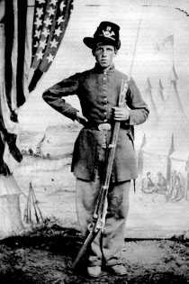

|

NAME: John Moy
BORN: 1838
DIED: 1864
ALLEGIANCE: Union
HIGHEST RANK: Private
UNIT: 6th Wisconsin Infantry, Company H
RECORD: Enlisted in Buffalo County (Wisconsin)
Rifles on May 10, 1861. Mustered in July 16 at Camp Randall,
Madison, Wisconsin. Injured in the Battle of Groveton,
Virginia, August 28, 1862. Hospitalized in Harewood
Hospital, Washington, D.C., in September and October.
Mortally wounded near Spotsylvania Court House, Virginia,
May 12, 1864. Died May 13.
|
|
Born in Canton Bern, Switzerland, John Moy came to the
United States in the early 1850s with his four brothers. The
Moys settled in west-central Wisconsin, where they found
work as lumbermen. Late in the spring of 1861, John and his
older brother Fred joined the Buffalo County Rifles, a
company being assembled by John Hauser, a professional
soldier and graduate of the Swiss Military Academy at Thun.
That July, Hauser's volunteers were mustered in as Company H
of the 6th Wisconsin Volunteer Infantry at Camp Randall in
Madison. During their first drill at Camp Randall, Captain
Hauser allegedly said they looked "yust like one damn herd
of goose." This was supposed to be the origin of the
company's nickname: "Hauser's Blond Gooses."
That fall the 6th joined the 2nd and 7th Wisconsin and
the 19th Indiana to form the "Iron Brigade." That unit, also
called the "Black Hat Brigade" after the felt hats its
members wore, was assigned to the Army of the Potomac's I
Corps, and saw its first major action in August 1862 at the
Battle of Groveton, Virginia. Moy was wounded in that fight,
and spent a little over two months at Harewood Hospital in
Washington, D.C. He missed the Battles of South Mountain and
Antietam, Maryland, but recovered in time to join his
regiment for the Battle of Fredericksburg, Virginia, in
December.
The next spring, John's brother Fred received a medical
discharge for what was probably rheumatic fever. John
continued in service with the 6th, taking part in the
Battles of Chancellorsville, Virginia, and Gettysburg,
Pennsylvania. On the first day of fighting at Gettysburg, he
participated in a counterattack on Confederate Brigadier
General Joseph R. Davis's brigade in a railroad cut,
resulting in the capture of the flag and most of the troops
of the Confederate 2nd Mississippi.
It was probably two or three weeks after fighting at
Gettysburg that Moy posed for this photograph, his black hat
adorned with the company letter of the "Blond Gooses." After
Gettysburg, the 6th Wisconsin was transferred with the rest
of the Iron Brigade from the I Corps to the V Corps. John
survived the Battle of the Wilderness early in May 1864, but
was wounded on May 12 during the Spotsylvania Court House
Campaign. He died the next day as a result of his wounds,
and is buried at Fredericksburg National Cemetery.
Source: Civil War Times Illustrated
35:6 (December 1996), 128.
|